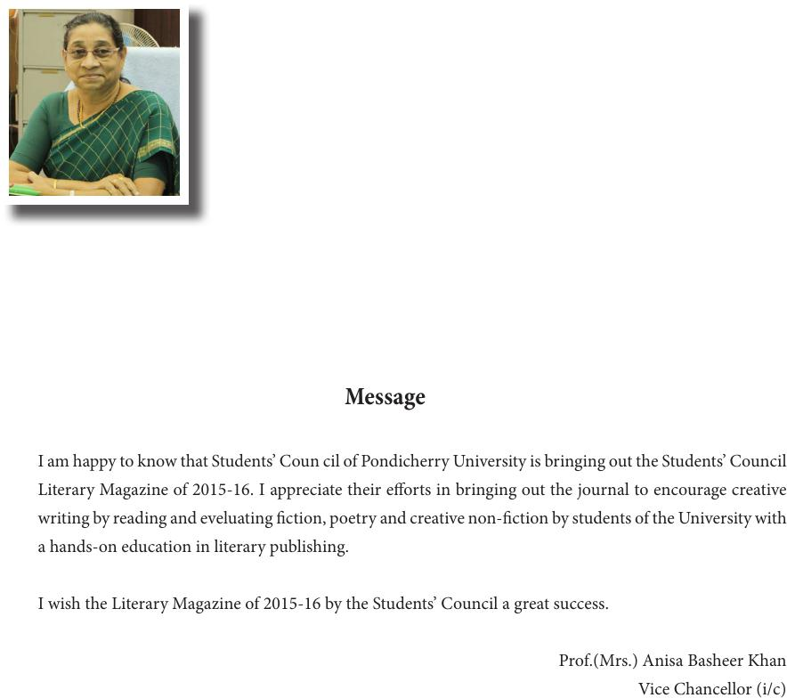

I am happy to know that Students’ Coun cil of Pondicherry University is bringing out the Students’ Council
Literary Magazine of 2015-16. I appreciate their eorts in bringing out the journal to encourage creative
writing by reading and eveluating ction, poetry and creative non-ction by students of the University with
a hands-on education in literary publishing.
I wish the Literary Magazine of 2015-16 by the Students’ Council a great success.
Prof.(Mrs.) Anisa Basheer Khan
Vice Chancellor (i/c)
Message